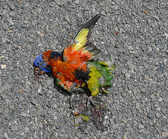

Противопопугайный сайт
Never Parrot
Мне одному кажется, что Мерида догадывается кто рисует её волосы в виде чёрных телефонных проводов?
Is that me or does Merida really look like she knows who made her hair look like black telephone wires?
Ой чёрт, она смотрит на меня!
Oh shit she's looking right at me!
↑